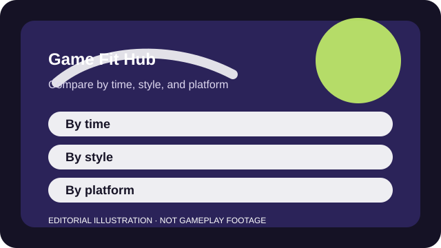

HOW TO USE THIS HUB
Start with the shape of your time, not the loudest trailer
Use it to compare how much time a game wants, how social it really is, what the spending pressure looks like, and whether the first session teaches the right things.
The original page URLs stay in place for compatibility, but each page is now a before-you-play profile. The goal is not to score every game the same way. It is to surface the tradeoffs that actually change a person's decision.
Start with session length and play style, then check platform and business model. If two games sound equally good, the better fit is usually the one whose social load and progression pressure make more sense for your current life.

FILTER BY SESSION LENGTH
First ask how much uninterrupted time you actually have
Quick sessions
Usually 1 to 20 minutes of real play. Examples: Fortnite, Apex Legends, Rocket League.
Planned match blocks
Set aside a focused chunk and expect one or two full games. Examples: VALORANT, Counter-Strike 2, PUBG: Battlegrounds.
Long competitive blocks
These games usually become the main activity of the night. Examples: League of Legends, Dota 2, Lost Ark.
Flexible hobby worlds
Short tasks are possible, but the broader game can easily absorb more time. Examples: Warframe, Genshin Impact, Destiny 2.
PLAY STYLE
Competitive matches and quick-fire skill loops
These are the pages to open when you care about repeated matches, clear win conditions, and whether the social or mechanical load matches your appetite.
SOCIAL SQUAD SHOOTER
Fortnite Before You Play: A Fit Guide for Social Squads and Zero-Build Newcomers
Best for short squad sessions and constant novelty; weaker if you want one stable competitive routine.
Open profile →ROUND-BASED TACTICAL SHOOTER
VALORANT Before You Play: Is It a Fit for Patient Team Shooters?
A strong fit for patient competitive players who want readable objectives and a long skill runway.
Open profile →CLASSIC TACTICAL SHOOTER
Counter-Strike 2 Before You Play: A Fit Guide for Competitive PC Players
A strong fit for players who want depth from clean fundamentals rather than classes, loadouts, or endless unlocks.
Open profile →MOVEMENT-HEAVY SQUAD BATTLE ROYALE
Apex Legends Before You Play: Is It a Fit for Movement-Focused Trio Players?
Best for squads who love movement and coordinated pushes; weaker if you hate looting or battle-royale downtime.
Open profile →PHYSICS-BASED COMPETITIVE SPORTS
Rocket League Before You Play: A Fit Guide for Quick Competitive Sessions
Excellent when you want a deep competitive game that still fits into ten-minute windows.
Open profile →OBJECTIVE-BASED HERO COMBAT
Overwatch 2 Before You Play: A Fit Guide for Hero-Swap Team Players
A good fit when you want fast, readable team fights and do not mind changing heroes to solve problems.
Open profile →ARENA OBJECTIVE SHOOTER
Halo Infinite Multiplayer Before You Play: Is It a Fit for Arena Shooter Fans?
A strong fit when you want equal-start arena combat and matches that do not monopolize the night.
Open profile →DESTRUCTION-DRIVEN SQUAD SHOOTER
THE FINALS Before You Play: A Fit Guide for Destruction-Driven Squads
Great for squads who like creative objective play and destruction; weaker if you want quiet visual clarity.
Open profile →HERO FANTASY TEAM COMBAT
Marvel Rivals Before You Play: A Fit Guide for Accessible Hero-Shooter Groups
A good fit when you want accessible hero fantasy and quick group matches, not clean minimalist gunplay.
Open profile →SLOW-BURN SURVIVAL SHOOTER
PUBG: Battlegrounds Before You Play: Is It a Fit for Slower Battle Royale Tension?
Best for players who want survival tension and realistic gun rhythm, not nonstop action.
Open profile →CROSS-PLATFORM FIGHTING GAME
Brawlhalla Before You Play: Is It a Fit for Cross-Platform Fighting Nights?
A clean fit when you want a free fighter that works across platforms and does not demand long sessions.
Open profile →HEAD-TO-HEAD SPORTS LIVE SERVICE
eFootball Before You Play: A Fit Guide for Free Football Match Sessions
Best for football fans who mainly care about free match access and can keep live economy features in proportion.
Open profile →ASYNCHRONOUS PRECISION RACING
Trackmania Before You Play: A Fit Guide for Quick Time-Trial Improvement
A great fit for players who want measurable improvement in tiny sessions and do not need direct-contact racing.
Open profile →SLOW TACTICAL TEAM COMBAT
World of Tanks Before You Play: Is It a Fit for Slow Tactical Vehicle Battles?
Best for players who enjoy deliberate tactical pacing and can keep premium offers in perspective.
Open profile →PLAY STYLE
Longer hobby progression and MMO-style commitments
These profiles focus on longer hobby games where the real question is not just moment-to-moment fun, but whether the surrounding progression structure suits your time and spending habits.
FAST CO-OP LOOT PROGRESSION
Warframe Before You Play: A Fit Guide for Co-op Loot Hobbyists
A great fit for players who love fast co-op PvE and do not mind learning many overlapping systems.
Open profile →SOLO EXPLORATION WITH LIVE-SERVICE SYSTEMS
Genshin Impact Before You Play: Is It a Fit for Solo Explorers Who Pace Spending?
A strong fit for solo explorers who can separate the free world from the temptation of banner spending.
Open profile →LOOT SHOOTER WITH CO-OP ENDGAME
Destiny 2 Before You Play: Is It a Fit for Co-op Groups Wanting Endgame Raids?
A good fit for groups that want premium-feeling shooting and are comfortable with add-on-driven live-service packaging.
Open profile →BUILD-FIRST LOOT RPG
Path of Exile Before You Play: A Fit Guide for Build-First ARPG Players
Best for theorycrafters who want depth first and are happy to treat outside guides as part of the game.
Open profile →EXPLORATION-FORWARD MMO
Guild Wars 2 Before You Play: A Fit Guide for Flexible MMO Explorers
A strong fit for players who want cooperative MMO energy without mandatory subscription pressure.
Open profile →ARPG COMBAT INSIDE AN MMO SCHEDULE
Lost Ark Before You Play: A Fit Guide for Action Combat and Scheduled Endgame
Best for players who want great isometric combat and can tolerate layered endgame systems and schedule pressure.
Open profile →OPEN-ENDED ACCOUNT PROGRESSION
RuneScape Before You Play: Is It a Fit for Open-Ended Long-Term Progress?
A durable fit for players who want account persistence and self-directed goals more than modern presentation.
Open profile →PLAYER-DRIVEN ECONOMY AND CORPORATION STRATEGY
EVE Online Before You Play: A Fit Guide for Corporation-Driven Space Strategy
Best for players who want economy, corporations, and high-consequence decisions more than accessibility.
Open profile →REPEATABLE CO-OP BOSS HUNTS
Dauntless Before You Play: A Fit Guide for Co-op Hunt Sessions
A clean fit for groups who want straightforward co-op hunts and do not need a giant long-form RPG around them.
Open profile →PLAY STYLE
Strategy, cards, and slower-thinking competition
Use this cluster when you want planning, deckbuilding, economy, or macro decisions to matter as much as or more than raw reflexes.
TEAM STRATEGY ARENA
League of Legends Before You Play: A Fit Guide for Long-Term Competitive Teammates
Best for players who want strategy depth and do not mind the long ramp into competence.
Open profile →SYSTEMS-HEAVY TEAM STRATEGY
Dota 2 Before You Play: Is It a Fit for Strategy-Heavy Teams?
A niche but powerful fit for players who want the deepest strategy sandbox in the library.
Open profile →TURN-BASED LADDER STRATEGY
Hearthstone Before You Play: A Fit Guide for Short Strategic Mobile Sessions
A strong fit for short strategic play, especially if you can stay focused on a small collection at first.
Open profile →ECONOMY-AND-POSITIONING STRATEGY
Teamfight Tactics Before You Play: A Fit Guide for Planning-Heavy Auto Battler Fans
Best for players who want long strategic matches and do not mind relearning the game each set.
Open profile →FILTER BY PLATFORM
Shortcuts for common device questions
- Fortnite — 10-25 minute matches, plus extra creator-mode time if you want it.
- Warframe — 10-40 minute missions, wrapped inside a much larger hobby-game structure.
- Genshin Impact — 15-90 minutes depending on whether you are exploring, questing, or doing dailies.
- Roblox — 5-60 minutes depending on the specific experience and group plan.
- PUBG: Battlegrounds — 20-35 minute matches where surviving deeper can consume a full play block.
- Hearthstone — 5-15 minute matches that fit well on PC or mobile.
- Teamfight Tactics — 30-40 minute matches that reward planning and adaptation more than speed.
- Brawlhalla — 3-10 minute matches that work online, locally, or in quick bursts.
- eFootball — 10-20 minute matches that are easy to fit in one sitting.
- RuneScape — 10 minutes to several hours across quests, skills, and long-term account goals.
- World of Tanks — 5-15 minute matches that can quietly chain into longer progression sessions.
- Counter-Strike 2 — classic tactical shooter
- League of Legends — team strategy arena
- Dota 2 — systems-heavy team strategy
- Guild Wars 2 — exploration-forward MMO
- Lost Ark — ARPG combat inside an MMO schedule
- EVE Online — player-driven economy and corporation strategy
- Fortnite — quick squad sessions
- Fall Guys — easy mixed-skill party rounds
- Rocket League — immediate local or online play
- Brawlhalla — short fighting-game bursts
- Halo Infinite Multiplayer — readable arena matches
- Open the individual profile for official source links.
- Check the business model before buying passes or expansions.
- Use the related guides when setup, cross-play, or spending is the real blocker.
COMPARE THE FULL LIBRARY
One-table view of the 30 current profiles
| Game | Typical session | Best for | Social shape | Spending notes |
|---|---|---|---|---|
| Fortnite | 10-25 minute matches, plus extra creator-mode time if you want it. | friends who want one free game that can flip between battle royale, social events, and creator-made modes | Fortnite works solo, but its flexibility and event cadence land better when you have a duo or squad to return with. | Core play is free. Spending is mostly cosmetic, but the shop and pass structure reward people who check in often. |
| VALORANT | 30-50 minute matches with a real time block for queueing and focus. | players who like patient round tension and are willing to improve with a regular small agent pool | Solo queue works, yet the game improves when you can communicate calmly or queue with at least one friend. | Competitive access is free. Monetization is centered on premium skins, bundles, and seasonal cosmetics. |
| Counter-Strike 2 | 30-45 minute matches once you include full rounds and queue time. | PC players who want classic tactical shooting and almost endless room to refine fundamentals | You can queue solo, but the game shines with a duo or team that can trade and call without panic. | Core play is free. Spending is mostly cosmetic, though the market layer can become a hobby of its own. |
| Apex Legends | 15-25 minute matches, with some extra setup time while learning maps and legends. | duos or trios who love movement, hero synergy, and endgame decision making | Playable solo, but the game feels much better when you have even one partner who pings well or uses voice calmly. | Core access is free. Cosmetics, passes, and event items are the main monetized layers. |
| Warframe | 10-40 minute missions, wrapped inside a much larger hobby-game structure. | players who want an enormous co-op grind with fast movement and lots of build experimentation | Warframe is comfortable solo or with drop-in co-op; a clan simply makes the larger system map easier to parse. | Time can replace much spending, but premium currency and inventory convenience can tempt new players before they understand the economy. |
| Genshin Impact | 15-90 minutes depending on whether you are exploring, questing, or doing dailies. | players who want a solo-first exploration game with live updates and character-building goals | The game is primarily solo-friendly, with optional co-op rather than required scheduling. | The adventure is free to start, but wish banners reward strict budget discipline if you are vulnerable to limited-character hype. |
| Rocket League | 5-10 minute matches that are easy to stack into a short session. | players who want five-minute matches and almost endless room to refine mechanics | Rocket League works solo, in duos, or in full teams; voice helps, but even casual pings or chat can be enough. | Gameplay is free. Monetization is centered on the pass and optional cosmetic bundles. |
| League of Legends | 25-45 minute matches, with extra time required for learning outside the match itself. | competitive players who enjoy team strategy, lane responsibilities, and learning a big champion roster over months | Solo queue works, yet the experience is emotionally easier when you have friends to queue with or strong mute discipline. | Core competition is free. Cosmetics dominate monetization, while expanding a big champion pool takes time rather than direct power purchases. |
| Dota 2 | 35-60 minute matches that demand sustained attention. | players who want maximum strategic freedom, long matches, and a ruleset that rewards deep systems knowledge | Solo queue is possible, but a patient group or thick skin helps because the game is system-dense and communication-heavy. | Core play is free, and spending is mostly cosmetic rather than competitive. |
| Overwatch 2 | 10-20 minute matches that are easy to sample casually. | players who like fast objective fights, hero swapping, and readable team roles | Overwatch 2 is easy to queue casually, though the match quality improves when teammates ping or talk around plans instead of reacting alone. | Access is free. Battle passes and cosmetic shop items are the core monetization pressure. |
| Destiny 2 | 20-120 minutes depending on whether you are doing quick activities or organized endgame. | players who want polished shooting plus long-form co-op goals like dungeons and raids | Patrols and some playlists work solo, yet the most memorable content is built around a regular group. | The free entry layer is real, but major campaigns, dungeon keys, and seasons often sit behind paid additions. |
| Path of Exile | 20 minutes to several hours, depending on where you are in a league or build plan. | players who enjoy theorycrafting, loot filters, and learning a build over a season | The game works fine solo, while trading and community guides become useful if you care about efficiency. | Power is not directly sold, but stash tabs become a practical quality-of-life purchase for many committed players. |
| Roblox | 5-60 minutes depending on the specific experience and group plan. | families, friend groups, or variety seekers who want many low-friction experiences on familiar devices | Roblox is highly social by default, which makes privacy and communication settings part of the fit rather than a side issue. | Entry is free, but Robux spending and experience-specific monetization vary widely enough that boundaries matter early. |
| Fall Guys | 10-20 minute show runs that work well for mixed-skill groups. | players who want low-pressure party sessions and easy laugh-at-the-chaos rounds | It is great with friends, but still easy to parse solo because the rounds are short and the stakes stay light. | The game is free to enter. Spending is mostly cosmetic and event-driven. |
| Halo Infinite Multiplayer | 10-20 minute matches that are easy to fit around other games. | players who want classic arena pacing, strong controller feel, and readable map control | Halo Infinite works solo or with friends; objective modes simply get better when even light communication exists. | Core multiplayer access is free. Spending is mostly cosmetic. |
| THE FINALS | 10-20 minute matches that still benefit from a regular squad. | squads who want destructible arenas, objective chaos, and creative gadget planning | Playable solo, but much better with a duo or trio who can coordinate pushes, revives, and retreats. | Core access is free. Monetization is mostly cosmetic and seasonal. |
| Marvel Rivals | 10-20 minute matches with fast hero experimentation up front. | players who want accessible hero-shooter action and already enjoy Marvel character fantasy | Easy to sample solo, yet team-up interactions and focus fire feel much better with friends or steady pings. | Core play is free. Spending is centered on cosmetics and seasonal extras. |
| PUBG: Battlegrounds | 20-35 minute matches where surviving deeper can consume a full play block. | players who want slower battle royale tension, longer sightlines, and punishing positioning | Solo, duo, and squad play all work; teamwork matters more than flashy mechanics. | Entry is free. Spending is mostly cosmetic and battle-pass driven. |
| Hearthstone | 5-15 minute matches that fit well on PC or mobile. | players who want turn-based strategy in short windows on PC or mobile | Hearthstone is mostly a solo queue game; the social layer is more about discussing decks than live teamwork. | You can play for free, but building many competitive decks quickly usually means money or careful long-term dust management. |
| Teamfight Tactics | 30-40 minute matches that reward planning and adaptation more than speed. | strategy players who want planning, economy decisions, and flexible adaptation instead of twitch aim | The game works solo or socially, yet live voice coordination matters less than in shooters or MOBAs. | Core play is free. Spending is mainly cosmetic and pass-based. |
| Brawlhalla | 3-10 minute matches that work online, locally, or in quick bursts. | players who want a free cross-platform fighter that supports short casual or local sessions | It works solo, couch-side, or online with friends, and communication is optional outside serious team play. | Entry is free, with optional unlocks, cosmetics, and crossover skins. |
| eFootball | 10-20 minute matches that are easy to fit in one sitting. | football fans who want free match access and are comfortable checking current mode support before investing time | Most of the social energy is head-to-head or local rivalry rather than voice-heavy team coordination. | Core match access is free, but live squad-building and special offers can add collection pressure. |
| Trackmania | 1-10 minute runs with instant restarts and easy stop points. | players who enjoy shaving seconds off a time and learning one track more efficiently each day | Most of the competition is asynchronous through ghosts and leaderboards, with optional live rooms layered on top. | Access tiers and club features can matter, so the current official offering is worth checking before you assume the long-term value. |
| The Sims 4 | 30 minutes to several hours depending on how deep you go into one household or build. | creative players who want storytelling, building, and self-directed household routines | The Sims 4 is primarily solo and self-paced. | The base game is free, but expansions and kits can turn the total cost into a long-tail decision. |
| Guild Wars 2 | 20 minutes to several hours, depending on whether you want open-world events or deeper progression blocks. | players who want an MMO with flexible grouping and less subscription pressure | Guild Wars 2 is easy to play solo in open-world events, while guilds and friends make structured endgame much easier to approach. | The base entry is generous, but expansions and convenience items unlock much of the larger progression arc. |
| Lost Ark | 30 minutes to several hours, especially once raids and roster systems matter. | players who like sharp isometric combat and do not mind layered endgame systems | Story play can be solo, while raids and endgame participation become the bigger long-term draw. | Free entry exists, but progression convenience and cosmetics can create pressure if you start chasing efficiency. |
| RuneScape | 10 minutes to several hours across quests, skills, and long-term account goals. | players who want open-ended goals, account persistence, and lots of low-intensity activities | It works solo, socially, or half-passively depending on what you are doing and how intensely you want to engage. | The free layer is real, but membership is the gateway to much of what long-term players value most. |
| EVE Online | 20 minutes to several hours, plus out-of-game planning if you go deep. | players who want a player-driven economy, corporations, and real risk attached to decisions | You can explore solo, but the strongest stories and progression usually come from corporations and coordinated groups. | Alpha access lets you sample, while Omega and optional services deepen the hobby if the wider game sticks. |
| Dauntless | 10-25 minute hunts that are easy to schedule with friends. | players who want approachable co-op hunts without Monster Hunter's heavier upfront complexity | The game is comfortable solo or in drop-in co-op, which lowers the scheduling pressure. | Core access is free. Cosmetics and seasonal extras are the main monetized layers. |
| World of Tanks | 5-15 minute matches that can quietly chain into longer progression sessions. | players who like slow tactical vehicle combat, spotting mind games, and historical machine flavor | The game is playable solo, though platoons make focus fire and map control easier to coordinate. | Core access is free, but premium time, convenience, and vehicle offers are part of the live economy pressure. |
SOURCES AND LIMITS
How to read these profiles responsibly
- Visible published and checked dates.
- Official source links for the game's live facts.
- A first-session plan, fit questions, and spending notes.
- A note on what can change after publication.
- A scored hands-on review across every platform.
- A guarantee that live-service details stayed unchanged after the checked date.
- A universal verdict for every type of player.
- Current store terms that should replace the official source pages.
When the live fact itself is the question—price, account requirements, platform support, or current event terms—open the profile and use the official source links first.
PLAY STYLE
Creative, party, and family-friendly variety
These pages cover variety platforms, party games, and creative sandboxes where curation, group mood, or self-directed play matter more than one strict ladder.
SOCIAL VARIETY PLATFORM
Roblox Before You Play: A Fit Guide for Families and Group Variety
Best when easy social variety matters more than curation, consistency, or a single polished game loop.
5-60 minutes depending on the specific experience and group plan. · social variety platform · PC, PlayStation, Xbox, Mobile, VR
Open profile →LIGHT PARTY COMPETITION
Fall Guys Before You Play: A Fit Guide for Casual Party Sessions
A clean fit for low-pressure party nights and short casual rounds, especially with mixed-skill groups.
10-20 minute show runs that work well for mixed-skill groups. · light party competition · PC, PlayStation, Xbox, Switch
Open profile →SOLO SANDBOX STORYTELLING
The Sims 4 Before You Play: Is It a Fit for Creative Sandbox Storytellers?
Best for creative solo players who want self-directed stories and can keep pack marketing in perspective.
30 minutes to several hours depending on how deep you go into one household or build. · solo sandbox storytelling · PC, PlayStation, Xbox
Open profile →